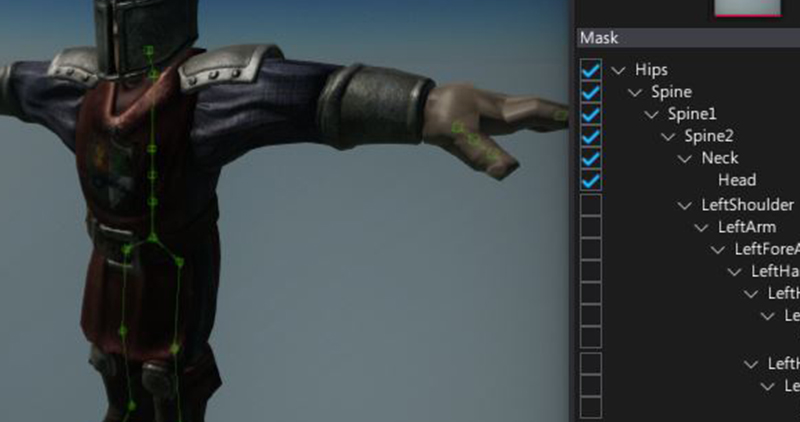
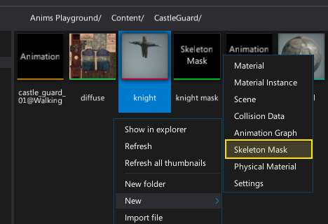
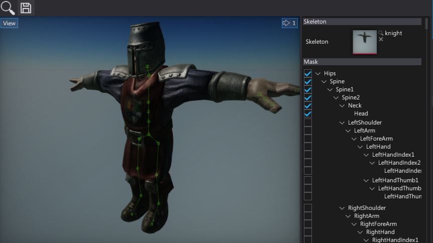
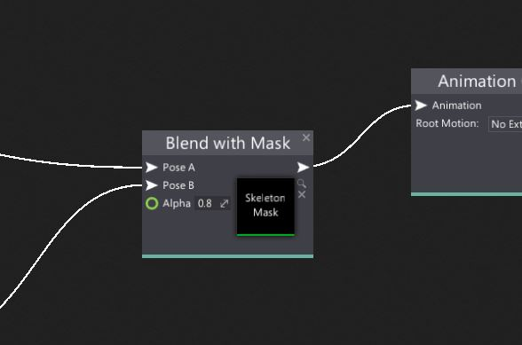

Skeleton Mask

Skeleton masks are assets that contain a skeleton bone boolean masking data. It's used in Anim Graph to blend between two poses uing the specified mask. For example, you can blend the run and shoot animations for the separate parts of the character body so the legs and hips are animated by run animation clip and the upper-body is using the shooting animation. You can mask any set of skeleton bones.
Using skeleton mask
To create a new skeleton mask asset, simply navigate to the Content directory in the Content window, then right-click and choose option New -> Skeleton Mask. Specify its name and press Enter.

Double-click on a created asset. Asset editor window will show up. Then drag-and-drop the target skinned model to use its skeleton as a reference for the mask. After that, you can use the checkboxes in the bones structure to edit the bones mask. Not that in the preview panel you can see the selected bones structure.

Next step is to use it directly in the Anim Graph. To do so add new Blend with Mask or drag and drop the asset into the surface. Then connect the poses and set up the blending.
